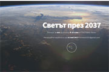
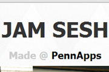
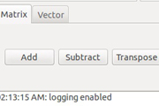
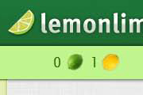
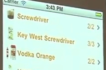
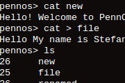
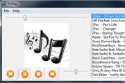
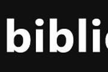
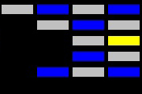
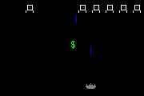

STEFAN ZHELYAZKOV
Software Engineer
Bachelor of Science in Engineering with Computer Science, UPenn 2013.
- Stefan Zhelyazkov
- University of Pennsylvania
- Stara Zagora, Bulgaria
- stefan.zhelyazkov@
gmail.com
- github.com/stefan-zh
- linkedin.com/in/stefanzh
Employment
-
Software Engineer2018 - 2019
WeWork, New York, NY
- Worked on an application for the furniture inventory of the company. I used Kotlin, Spring, Hibernate, REST, React, TypeScript. I was responsible for the backend architecture, database management, REST API, soft delete infrastructure, speed optimizations, security, tests.
- Initiated a library for DAO objects which makes communicating with the database easier, including working with transactions. The library was shared with other internal teams and received good feedback which helped for its integration in the common backend libraries of the department.
- Worked with a summer intern whose project was successfully integrated into production
-
Software Engineer2016 - 2018
Honest Buildings, New York, NY
- Developed most of the first Reporting & Exporting tool - complex and efficient DB queries, in-screen data formatting, coloring, highlighting, filtering, saving, and exporting to Excel. I used Java 8, Dropwizard, AngularJS 1.6, JavaScript, jOOQ.
- Actively contributed to a stronger backend architecture. Initiated and contributed to the separation of the services layer from the endpoints.
- Refactored and cleaned legacy code, resolved bugs and helped increase code coverage.
- Helped introduce a Java linter and a stylechecker
- Regularly updated some of our major BE library dependencies and performed code uplifting accordingly
-
Technology Analyst2013 - 2016
Goldman Sachs, New York, NY
Worked on business applications for the Credit Risk team:
- Java back-end applications aggregating GB’s of data and producing Credit Risk metrics. Worked on the full flow from sourcing, transforming, aggregating, displaying and storing the data. Optimized the legacy codebase. Documented it. Sped up certain processes by up to 14%.
- Adapted several large Java applications (60GB RAM ~ 120GB) to run on a new grid of servers thus helping reduce maintenance costs. This work resulted in annual savings between $100,000 - $200,000.
- Actively worked with interns and other junior people. Participated in the recruiting efforts of the company, including the firmwide Hackathon Recruiting Committee for 2015/2016.
Education
-
University of Pennsylvania2009 - 2013
Bachelor of Science in Engineering Cum Laude
Graduated with a BSE in Computer Science in May 2013. Minors in Mathematics and Science, Technology & Society.
-
Romain Rolland FLS2004 - 2009
Stara Zagora, Bulgaria
Graduated from Romain Rolland Foreign Language School. Areas of concetration: English, German, Mathematics and Literature.
Programming Languages
-
Java/Java 8+
-
Kotlin
-
JavaScript/TS
-
PHP + MySQL
-
Haskell, OCaml
-
C/C++, Python
Tools & Technologies
-
Spring
-
Dropwizard
-
React
-
AngularJS
-
JUnit 4/5
-
jOOQ
-
Mockito
-
Git/SVN
-
Gradle/Maven
Speaks
-
Bulgarian
-
English
-
German
-
IPCC Sixth Assessment Report in Bulgarian
Video© 2021 IPCC
Climate change is a very concerning problem and its science basis needs to reach more people. I decided to translate the video of the IPCC Sixth Assessment report in Bulgarian, so that it becomes accessible to the native speakers in Bulgaria. I explicitly requested approval for this from the IPCC in an email and received a response with permission.
-
Can & Sanem
Video© 2020 bTV, Dogus Digital
This is a beautiful song from S02E19 of the televised Turkish drama "Erkenci Kuş" in Bulgaria airing on bTV. I translated the lyrics in Bulgarian to express the meaning of the song for the viewers and fans of the show in Bulgaria.
-
beeTV-Plus
Mobile© 2020 Stefan Zhelyazkov
"beeTV-Plus" is a mobile application for Android that allows streaming content from bTV Plus website.
This application makes it easier for people who are not as tech-savvy to watch the same content directly on their phone or tablet.
It also supports Google Cast, so you can connect it to your Cast device at home.
-

World 2037
Website© 2017 Stefan Zhelyazkov
"Svetat 2037" is a website for an essay writing competition for the students at FLS Romain Rolland in Stara Zagora, Bulgaria.
The projects seeks to encourage students to think about the future. They can think about what the cities in the future will look like, how transportation will change, how technology will evolve and how humankind can make great strides in space exploration. However, it also asks the question of whether the World of the Future can collapse on itself and turn into dystopia.
The competition targeted students 8th-12th grade from the high school.
-
Reading Music From Images
Course Project© 2012 - 2013 Stefan Zhelyazkov, Eric O'Brien, David McDowell, Prof. Boon Thau Loo
"Reading Music From Images" is a year-long project aiming to develop an algorithm for extracting audible representation from visual information. The study analyzed two popular approaches known as Direct Mapping and Chromatic Analysis (more on the topic here). Based on those findings, the team developed a more advanced algorithm called Extended Chromatic Analysis (xCA). The algorithm consists of two main parts: an image processing subroutine "Focal Analysis" and generation of chord progressions. The algorithm successfully achieved two main objectives - no randomness and a relatively more pleasant music (based on results from Amazong Mechanical Turk).
The project was featured on the front page of The Daily Pennsylvanian on April 15th, 2013.
-
wxReversi
Course Project© 2013 Dan Zhang, Nathan Fraenkel, Stefan Zhelyazkov
This is an implementation of the popular game Reversi. The game is designed in Haskell and is built on top of the wxHaskell GUI package. Created as a final project for the University of Pennsylvania course on Haskell CIS 194.
-

JamSesh
Website© 2013 Stefan Zhelyazkov, Nathan Fraenkel, Dan Zhang, Grace Wang
JamSesh is an online collaborative music environment. It lets people play music instruments (piano for now) synchronized. During a "jam session" the users can record and save their collaborative music piece as well as see each other through the video conference tool, provided by TokBox. Hosted by OpenShift. Developed at PennApps 2013 S.
-

Lia
Course Project© 2012 Stefan Zhelyazkov, Hamidhasan Ahmed
Lia is a linear algebra library and calculator written in Haskell. Supports both vector and matrix calculations.
-
WineSquare
Website© 2012 Nathan Fraenkel, Jason Lucibello, Boris Treskunov, Stefan Zhelyazkov
WineSquare is a location-based web application that lets people check-in whenever they have a glass of wine. The more places the users check-in at, the more badges they receive as awards. WineSquare is also great for discovering new wines with its database of over 2,300 different brands.
-
Superscalar Processor
Course Project© 2012 Amalia Hawkins, Dan Trujillo, Stefan Zhelyazkov
Developed a model for a five-stage pipeline superscalar processor for the Computer Architecture course CIS 371 at the University of Pennsylvania. The model was written in Verilog using a programmable board and a development environment by Xilinx.
-

Lemonlime
Website© 2010 - 2012 Chadwick Prichard, Stefan Zhelyazkov, Adi Dahiya
A small startup aming to making social discovery more exciting. People who signed up were able to compare their friends' traits and thus provide data for similarity analisys. Based on that data Lemonlime provided the "Social Discovery Engine" - people with similar traits could discover each other and possibly make friends.
Winner of the RJMetrics Prize at PennVention 2011.
-

MixMaster
Mobile© 2012 Connie Ho, Cynthia Mai, Jinyan Cao, Stefan Zhelyazkov
MixMaster is a mobile application aiming to facilitate the making of awesome homemade drinks. The application contains a database of over 10,000 recipies and is available for the 3 major mobile platforms - Android, iPhone and WP7. MixMaster is easy to use - just scan the barcodes of the products you have and it will display the list of available cocktails you can make as well as a list of those that are closer to the ingredients present.
The app was developed at PennApps Spring 2012.
-
MyTube
Course Project© 2011 Dustin DeMeo, Stefan Zhelyazkov, Ying Pan, Ben Halterman
MyTube is a standalone desktop video player that utilizes YouTube content. The player features a responsive search bar that works directly with the YouTube API and panels for creating and arranging playlists. One of the best features of MyTube is that it lets anyone watch their favorite videos, including VEVO, without displaying any of the YouTube commercials.
-

PennOS
Course Project© 2012 Stefan Zhelyazkov, Sandy Sun, Ruxin Ho, Bob Han
PennOS is a Unix-based guest operating system with its own scheduler and a file system. Contains some of the basic OS functionalities like job control, file handling, printing to screen, and processes priorities. PennOS was written entirely in C.
-
Social+
Mobile© 2011 Jinyan Cao, Stefan Zhelyazkov, Dan Trujillo
Social+ is a Windows Phone 7 application that lets you login with your facebook profile and collects data about your likes. Based on your likes it recommends you concerts of your favorite artists in the area nearby as well as ticket information and dates; movie showings with your favorite actors and directors or movies similar in genre to your favorites; restaurants and bars based on your food tastes, preferences, and distance from you; recommended tv shows also based on your tv likes.
Social+ won Top Windows Phone 7 App award sponsored by Microsoft and Student Choice Award out of 41 teams, sponsored by First Round Capital, at PennApps Data in September 2011.
-

OAT Compiler
Course Project© 2011 Mishal Awadah, Stefah Zhelyazkov
OAT is a strongly typed object-oriented programming language. The specifications for the type system are available here. The compiler for the language was created over the course of a semester in the University of Pennsylvania course in Compilers CIS 341. The OAT compiler was written in OCaml and the game Bubble Trouble was created as a final assignment in the course.
-
PennQuiz
Course Project© 2011 Stefan Zhelyazkov, Ruxin Ho
PennQuiz is an Android application similar to the game "Who Wants To Be a Millionaire?". The game uses facebook login as authentication and lets users challenge their friends with questions. A challenged user receives points when he/she asnwers the questions. After a round is complete, the challenged user has the option to "challenge back". Then the original sender of the questions has to answer them as well. The winner from the duel receives extra points. The goal of the game is to gain the highest number of points among your friends.
-

PyPlay
Course Project© 2011 Stefan Zhelyazkov, Jinyan Cao
PyPlay is an interactive music player. It features control buttons from which one can control the playing mode of the player, a playback slider that shows the length of the track, an album art picture that relates to the song played and a playlist where songs get ordered alphabetically. In PyPlay you can add a single song or a whole folder. Once you add a folder, all songs get listed in the playlist window alphabetically.
-

Biblioteka
Mobile© 2011 Stefan Zhelyazkov, Jinyan Cao, Alex Zhang
Mobile version of the UPenn Library Catalog with the feature of mapping a book to a location in the biggest University library – Van Pelt. Ended up 2nd/31 teams for the Student Choice Award at PennApps Mobile in January 2011.
-

Breakout
Course Project© 2010 Stefan Zhelyazkov
This is a Java implementation of the popular game Breakout. There are three levels with different designs and one powerup on each level - the superball. The game was developed as a homework assignment for the University of Pennsylvania introductory course to Computer Science CIS 120.
-

SpaceInvaders
Course Project

{kind=link}
{kind=link}
{kind=link}
{kind=link}
{kind=link}
{kind=link}
{kind=link}
{kind=link}
{kind=link}
{kind=link}
{kind=link}
{kind=link}
{kind=link}
{kind=link}
{kind=link}
{kind=link}
{kind=link}
{kind=link}
{kind=link}
{kind=link}
{kind=link}
{kind=link}
{kind=link}
{kind=link}
Certificates
-
Building Cloud Services with the Java Spring Framework Oct 2019
Vanderbilt University
Credential ID QUJF6REB8VK3
-
Front-End Web Development with React Nov 2018
The Hong Kong University of Science and Technology
Credential ID WERHEH5WYVUD
-
Algorithms: Design and Analysis, Part 2 May 2015
Stanford University
-
Algorithms: Design and Analysis, Part 1 Dec 2014
Stanford University
-
Functional Programming Principles in Scala Jun 2014
École Polytechnique Fédérale de Lausanne
Papers
Authors
-
Reading Music From Images2013
Department of Computer Science, University of Pennsylvania
From a historical perspective, there have been many scientific attempts to find a relationship between images and music with respect to the emotions that both subjects evoke. In modern times, these scientific efforts have been facilitated by the use of computers aiming to discover evidence for objective correspondence between visual and audible information. Based on existing research, this research is targeted to analyze currently used algorithms for reading music from images by comparing their output based on feedback from a pool of testers. The second goal is to provide an improved algorithm for conversion of images into music that will extend on the algorithms analyzed in the experiments. This is a process that uses the results of two existing algorithms in the design of a third algorithm, Extended Chromatic Analysis.
-
Stefan Zhelyazkov
-
Eric O'Brien
-
David McDowell
-
Boon Thau Loo (Advisor)
-
-
Статистически анализ на шампионатните отличия на българските футболни отбори2013
Individual
Настоящето изследване разглежда националните отличия на българските футболни отбори в родното първенство. Главните категории на статистическия анализ са брой отличия от официални и неофициални турнири, класифициране на трофеите, които се считат за Национална купа, разпределение на клубните отличия по градове, анализиране на коефициента на успеваемост на българските отбори, подробен анализ на успеваемостта на "ПФК Левски (София)", "ПФК ЦСКА (София)" и "ПФК Лудогорец (Разград)" и последно - анализ на дубълите и требълите на българските футболни отбори. Статистическите данни са изложени в раздел "Статистика". Преди това е представена кратка история на българския футбол, обяснения по официалните трофейни турнири и пълен списък на 26-те отбора, които са печелили национални отличия. Изследването завършва със секция, която обобщава резултатите, и представя няколко интересни факта. Изследването не е рецензирано и е отворено за дискусии и по-нататъшни корекции и надграждания.
-
Stefan Zhelyazkov
-